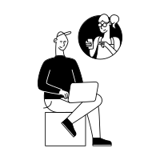
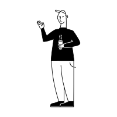
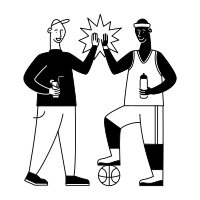
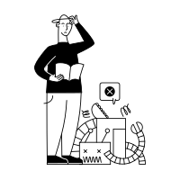
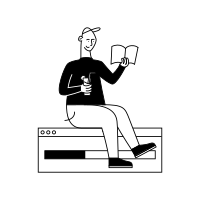

Leading 3 engineering teams while staying close to the code.
Hi, I'm Piotr Adamski—an Engineering Manager based in Cracow, Poland with over 10 years in software development. At Motorola Solutions, I lead a 16-person engineering organization across Cloud Backend, Media Streaming, and Cloud Camera Firmware while actively contributing to our C++ and Go repositories and championing AI-augmented workflows.



Piotr Adamski — Motorola Solutions
How I build teams & ship software
Building strong, self-sufficient teams is just as important as writing clean code. Here is how I balance both every day:
Grounded Technical Roadmaps
Partnering closely with Product Managers and stakeholders to translate business goals into clear architectural roadmaps across Cloud, Streaming, and Firmware teams.
Hands-On Code & Architecture
I haven't let go of the code. Active C++ and Go contributions and thorough code reviews help me make grounded decisions and keep technical debt in check.
Pragmatic Delivery & CI/CD
Caring deeply about solid CI/CD pipelines, reliable automated testing, and eliminating flaky tests so engineers can ship production features with confidence.
Four pillars of my engineering organization
Multi-Team Engineering Leadership
Leading 16 engineers across 3 independent domains. Focused on mentoring, scaling self-organizing Scrum teams, end-to-end recruitment as Hiring Manager (from Interns & QA to Senior Developers), and performance growth.

Cloud Backend, Streaming & Firmware
Driving software development and market introduction of cloud-connected camera systems—including H6M & H6A (Domes and Bullets)—backed by 8.5+ years in global Telco & large-scale Real-Time Systems.
AI-Augmented Engineering & ML
Integrating Claude, Gemini, and GitHub Copilot into daily workflows across my teams to accelerate development, architecture design, and testing—plus hands-on experience with AWS Bedrock (RAG) and Python ML.

C++, Go, Cloud & Solid CI/CD
Active contributor to C++ and Go repositories. Led cross-team CI initiatives with QA to stabilize deployment pipelines, eliminate flaky tests, and ensure reliable, accurate bug detection.

10+ years from Hardware & Telco to Cloud Engineering Leadership
Motorola Solutions
1 yr 10 mosCracow, Małopolskie, Poland
Software Engineering Manager
Sep 2026 — PresentLeading a 16-person engineering organization across three independent teams—Backend, Media Streaming, and Cloud Firmware—building advanced cloud-connected camera systems while actively contributing to C++ and Go repositories and championing AI-augmented engineering workflows.
Software Engineering Technical Manager
Jan 2025 — Aug 2026 (1 yr 8 mos)- Team Leadership: Managed, mentored, and scaled two Scrum teams (up to 9 direct reports), ensuring they have the tools and environment needed to deliver high-quality software.
- Product Delivery: Drove the software development and successful market introduction of cloud-enabled H6M and H6A (Domes & Bullets) cameras.
- Team Building & Recruitment: Acted as Hiring Manager end-to-end across all seniority levels—spanning from Interns and QA engineers to Senior Developers.
- Hands-On Engineering: Actively contributed to the core codebase (primarily in C++ and Go), conducting code reviews and providing architectural guidance.
- Process Optimization: Led cross-team CI initiatives with QA to stabilize deployment pipelines, eliminating flaky tests and ensuring reliable bug detection.
Ericsson
8 yrs 6 mosCracow, Małopolskie, Poland
Technical Team Leader / Senior Software Developer
Jan 2021 — Mar 2025 (4 yrs 3 mos)- Controlled product development process, supported team self-organization and cross-functionality, acted as Scrum Master, and supported the Product Owner.
- Worked with global Telco companies and large-scale Real-Time Systems (RTS), creating test scenarios for large-scale system tests and performing live tests in customer networks.
- Delivered Machine Learning projects (Python, Pandas, scikit-learn, NumPy) for performance optimization in high-traffic networks.
- Hands-on development of AI / RAG-based solutions (AWS, Amazon Bedrock).
Software Developer
Apr 2017 — Jan 2021 (3 yrs 10 mos)Developed code for new features, maintained telecommunications systems, and resolved customer network trouble reports.
Junior Software Developer
Oct 2016 — Apr 2017 (7 mos)Feature development, testing, troubleshooting, and code improvements within the GSM area (XFT Team).
Technical Specialist
Diagnosing hardware and software faults, testing new devices, technical customer support, and technical presentations in Cracow.
Electronic Engineer
Electrical testing of manufactured devices, production management of electronic circuits, and quality control in Cracow.
Certifications
AI Devs 2 — Connect GPT-4 with Application & Automation Logic
LLM orchestration, AI agents, and production automation workflows
C and C++ SEI CERT Based Secure Coding (ARM)
Secure embedded & systems programming practices
Professional Scrum Master™ I (PSM I) & Scrum Master Toolbox
Agile delivery, servant leadership, and team facilitation
ISTQB® Foundation Level
Software quality assurance and structured testing standards
Education
Rzeszow University of Technology
Politechnika Rzeszowska im. Ignacego Łukasiewicza
Bachelor of Engineering (Inż.), Electronics & Telecommunications
Zespół Szkół nr 3 w Sanoku
Mechatronics Technician (Technik mechatronik)
Languages
Let's talk engineering, cloud cameras, or leadership.
Whether you want to connect about scaling engineering teams, C++ & Go systems, or AI-augmented workflows—drop me a message directly or connect on LinkedIn.